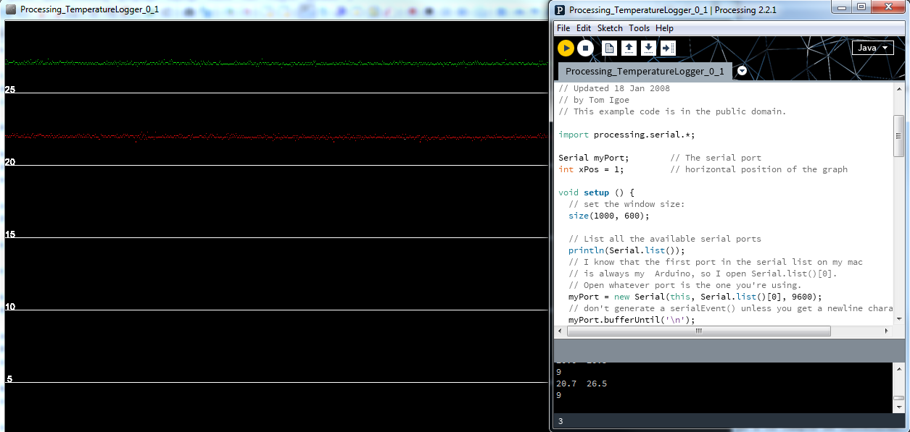

Tutorial de como ler a temperatura de um sensor LM61
Requisitos:
- Arduino
- sensor lm61
a montagem do sensor para medida com o ADC do Arduino deve ser feita colocando o Vout no pin A0 por exemplo.
alimentar com 5V o sensor.
introdução ao ADC do Arduino.
Na sua forma mais simples com o uso das libraries do IDE do Arduino o grau de granularidade que possuimos é aquele que foi predefenido pelos desenvolvedores.
No entanto devemos compreender que o ADC do Arduino pode ler um sinal analógico a diferentes velocidades até metade da velocidade do relogio extreno que usualmente num arduino é de 16 Mhz, e tão lento como 125 Khz. a velocidade a que se realiza a leitura pode influênciar a precisão da leitura, i.e. o número de bits que estamos a obter pode diminuir não nos dados que são devolvidos do ADC mas devido a perda de informação.
técnica importante para reduzir o ruído do ADC
Para reduzir o Ruído obtido pelo ADC devemos realizar diversas medições, e obter uma média dessas mesmas medições por forma a reduzir o erro ao mínimo. usualmente e se o ADC estiver com um relógio de leitura elevado por exemplo a 4 Mhz podemos efectuar 30 leituras, efectuando a média de seguida por forma a termos um valor mais perto de 10 Bits no ADC do Arduino.
Outra técnica para aumentar a precisão do ADC podemos alterar a referência interna dos 5V para 1.1V, em muitos casos passaremos uma unidade de ADC ou ADU(analog Digital Unit) de 4.88mV para 1.07mV, como podemos comprovar das duas expressões que se apresentam de seguida.
se AREF = 5 V, com 1023 ADU temos que 5 V / 1023 = 4.88mv
se AREF = 1.1V, com 1023 ADU temos que 1.1 V / 1023 = 1.07mv
em determinadas situações não é necessário aumentar esta definição se o ruido obtido for semelhante a 5mv no entanto se os valores de descriminação de um sensor forem na ordem do miliVolt é aconselhado alterar a referência interna do ADC para aumentar a precisão.
tomemos como exemplo o lm61 que permite ter precisões de 0.1ºC para termos um ideia cada grau no LM61 correspondem 10 mv, com uma definição do ADC dada pela AREF de 5 volts apenas obtemos 1ºC de precisão, pois os incrementos são de 4.88mv o que no LM61 são 0,5ºC, no entanto com a presença de ruído apenas conseguiremos 1 ºC de referência.
Reparemos que se utilizarmos uma medição de 1 mV obtemos 0.1ºC, adicionando o ruído de leitura teremos 0.2ºC, atenção que com a técnica de obtenção da média podemos de forma simples retirar o rúido para o valor mínimo, ficando muito perto dos valor de 0,1ºC.
Outra técnica utilizada nas leituras para reduzir o ruído passa por entrelaçar o condutor do sinal no condutor do ground por forma a os campos se cancelarem.
outra técnica ainda passa pela utilização de contactos soldados, pois os fenómenos de ruido gerado por maus contactos tende a desaparecer, o isolamento do contactos, por forma a remover qualquer crosstalk entre pinos de leitura, reduz também o ruído.
NOTA:
A experiência com estes sensores no arduino, aponta para a necessidade de calibrar cada um dos sensores para que as medições mostrem valores coerentes e com baixo erro, para isso introduz-se um termo que no código aparecerá como ADC_K que efectua a orreção no cálculo da temperatura real.
Para determinar o ADC_K é necessário determinar qual a tensão que o ADC determinou, assim como valor medido pela saida vout do lm61 e efectuar a determinação da temperatura reportada por este, com os dois valores determinados, calcula-se o ADC_K através da expressão:
ADC_K = temperatura_ADC / temperatura_Calculada_Voltimetro
O calculo da temperatura do ADC efectua-se com a expressão:
temperatura = (((output_ADC * ADU_K ) - 0.6 ) * 100)
não corrigida.
para incluir a correção: utiliza-se a expressão
temperatura corrigida = (((output_ADC * ADU_K ) - 0.6 ) * 100) / ADC_K
de seguida apresenta-se o Código utilizado para os testes de temperatura do AltoEspectro. assim como um pequeno readout e respectivo gráfico realizado com um programa feito no Processing

/**/
//Temperature Sensors 1 and 2
const int analogin = A0;
const int analogin1 = A1;
//pwm output pin
const int analogout = 11;
//Temperature sensors ADU_K's
const float ADU_K = 0.00107;
unsigned int input = 0;
unsigned int input1 = 0;
unsigned short output = 0;
//Temperature sensors ADC_K's
float ADC_K = 1.06231;
float ADC_K1 = 1.06974;
void setup() {
// put your setup code here, to run once:
Serial.begin(9600);
analogReference(INTERNAL);
}
void loop() {
// put your main code here, to run repeatedly:
input = readADC(analogin);
input1 = readADC(analogin1);
float temp = ((input * ADU_K) / ADC_K - 0.6) * 100;
float temp1 = ((input1 * ADU_K) / ADC_K1 - 0.6) * 100;
//Serial.print(input);
//Serial.print(" Temp: ");
Serial.print(temp, 1);
Serial.print(" ");
//Serial.println(input1);
//Serial.print(" Temp1: ");
Serial.println(temp1, 1);
delay(500);
/* for (int i = 0; i < 255; i++) { Serial.println(i); analogWrite(analogout, i); delay(100); } */
analogWrite(analogout, 255);
}
int readADC(int sensor)
{
unsigned int readout = analogRead(sensor);
unsigned int data;
for (int i = 0; i < 33; i++)
{
data = data + analogRead(sensor);
}
data = data /33 ;
}